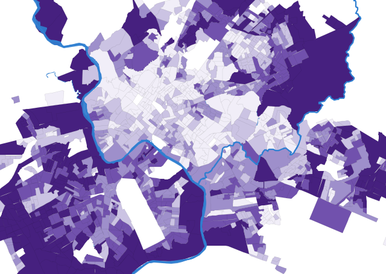
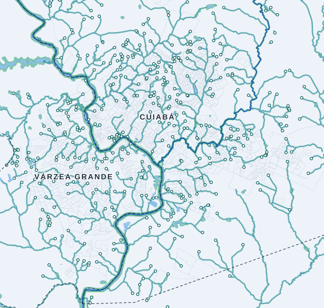
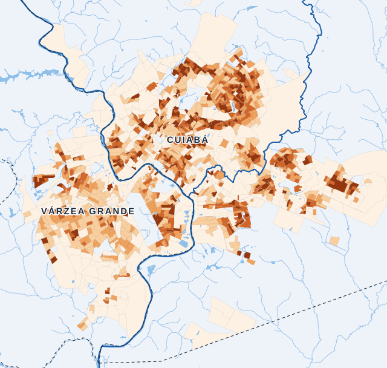
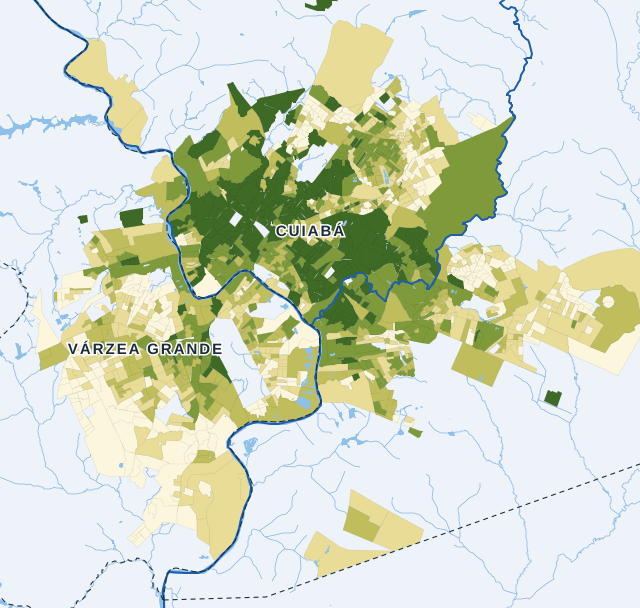
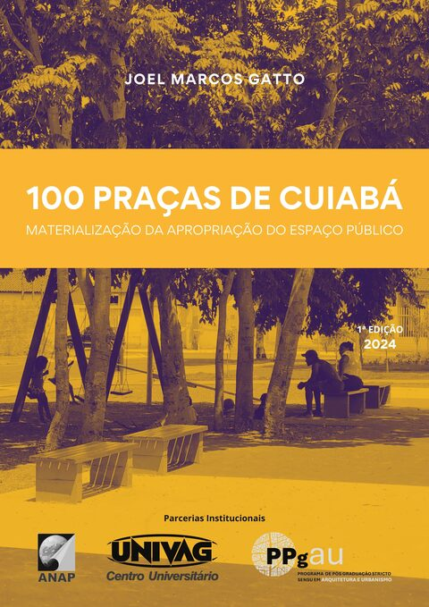
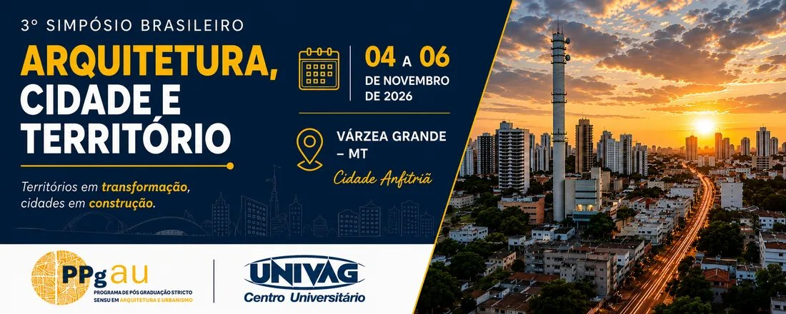
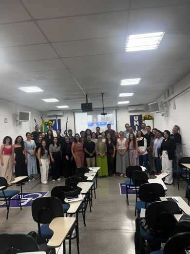
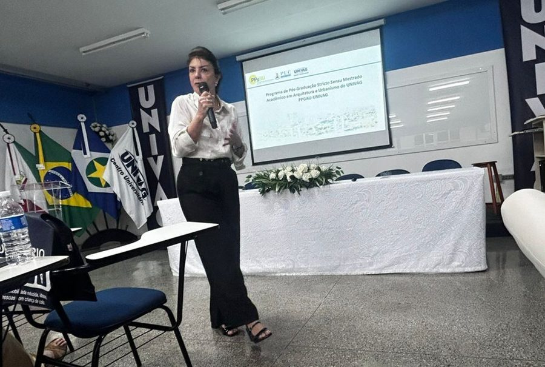

Defesa
Emili Takimoto defendeu a dissertação
“Vulnerabilidade climática: uma análise sobre o Córrego do Barbado em Cuiabá-MT”. Orientação de Diana Carolina Jesus de Paula, coorientação de Natallia Sanches e Souza.
Área de concentração Arquitetura, Cidade e Território. Aulas híbridas às sextas à noite e aos sábados, em 24 meses, no UNIVAG Centro Universitário.
Autoavaliação 2026 · responda até 03/11Questionário anônimo para estudantes, egressos, docentes e equipe. Leva poucos minutos.Questionário anônimo para estudantes, egressos, docentes e equipe. Leva poucos minutos.
ResponderRevista trimestral do programa, com DOI em todos os artigos. Conheça os 11 números publicados.
Conhecer a revista



Conurbação Cuiabá–Várzea GrandeIndicadores socioambientais dos 1.940 setores censitários dos sete municípios da RMVRC: Censo 2022, vegetação, temperatura de superfície, inundação, APP, saúde ambiental e ODS. Com metodologia, fontes e dados abertos.
Publicação trimestral do PPGAU sobre arquitetura, cidade e território. ISSN 2965-6125, 11 números desde 2023, DOI em todos os artigos.
Conhecer a revistaQuestionário anônimo para estudantes, egressos, docentes, pós-doutorandos, equipe técnica e gestão. Sua resposta orienta o planejamento do programa.
Responder agoraColetâneas e anais organizados pelo programa e por seus docentes, com download gratuito.
 Quadrinhos para pensar a cidade
Quadrinhos para pensar a cidade Brasil Urbano
Brasil Urbano Infraestrutura, planejamento e meio ambiente
Infraestrutura, planejamento e meio ambiente
100 Praças de Cuiabá Anais do Simpósio Brasileiro Cidade, Paisagem e a Natureza · Vol. I
Anais do Simpósio Brasileiro Cidade, Paisagem e a Natureza · Vol. I Anais do Simpósio Brasileiro Cidade, Paisagem e a Natureza · Vol. II
Anais do Simpósio Brasileiro Cidade, Paisagem e a Natureza · Vol. II Anais do Congresso Latino-americano de Desenvolvimento Sustentável · Vol. I
Anais do Congresso Latino-americano de Desenvolvimento Sustentável · Vol. I Anais do Congresso Latino-americano de Desenvolvimento Sustentável · Vol. II
Anais do Congresso Latino-americano de Desenvolvimento Sustentável · Vol. II Anais do Congresso Latino-americano de Desenvolvimento Sustentável · Vol. III
Anais do Congresso Latino-americano de Desenvolvimento Sustentável · Vol. III Meio Ambiente
Meio Ambiente Premiação · 20252º lugar no concurso nacional de artigos científicos da 1ª Conferência Internacional do CAU/BRJessica Seabra e Jeane Aparecida Rombi de Godoy, com Taynara Barreto Macedo (mestranda do PPGAU)Ver premiações
Premiação · 20252º lugar no concurso nacional de artigos científicos da 1ª Conferência Internacional do CAU/BRJessica Seabra e Jeane Aparecida Rombi de Godoy, com Taynara Barreto Macedo (mestranda do PPGAU)Ver premiações 
Territórios em transformação, cidades em construção.
“Vulnerabilidade climática: uma análise sobre o Córrego do Barbado em Cuiabá-MT”. Orientação de Diana Carolina Jesus de Paula, coorientação de Natallia Sanches e Souza.
Livro de Jessica Seabra com Diana Carolina Jesus de Paula, Natallia Sanches e Souza e Fábio Friol Guedes de Paiva. Mostra o processo, os resultados e uma reflexão crítica sobre o projeto de extensão “Cuiabá e o Direito à Cidade: da teoria à educação em quadrinhos”.
O CBCS oferece o Programa de Capacitação no Sidac, Sistema de Informação do Desempenho Ambiental da Construção, em três módulos: Usuários, Fabricantes e Revisores. A formação fica disponível de 01/10 a 31/10/2026. As inscrições foram até 15/10.

V Seminário de Pesquisa em Arquitetura e Urbanismo15 ago. 2026 Atividades de maio de 2026maio 2026
Atividades de maio de 2026maio 2026 8º Congresso Internacional de Arquitetura da Paisagem (8º CIAP)maio 2026
8º Congresso Internacional de Arquitetura da Paisagem (8º CIAP)maio 2026 Início de 2026jan.–fev. 2026
Início de 2026jan.–fev. 2026 Atividades do 2º semestreago.–out. 2025
Atividades do 2º semestreago.–out. 2025 1ª Conferência Internacional do CAU/BR: 2º lugar no concurso de artigosset. 2025
1ª Conferência Internacional do CAU/BR: 2º lugar no concurso de artigosset. 2025
Seminários de pesquisaago. 2025 Aulas e semináriosjun. 2025
Aulas e semináriosjun. 2025Mapa do UNIVAG Sede, Várzea Grande, MT. Se não aparecer, use os botões ao lado.
UNIVAG Centro Universitário, Sede, Bloco C
Av. Dom Orlando Chaves, 2.655, Cristo Rei
Várzea Grande, MT, CEP 78118-900